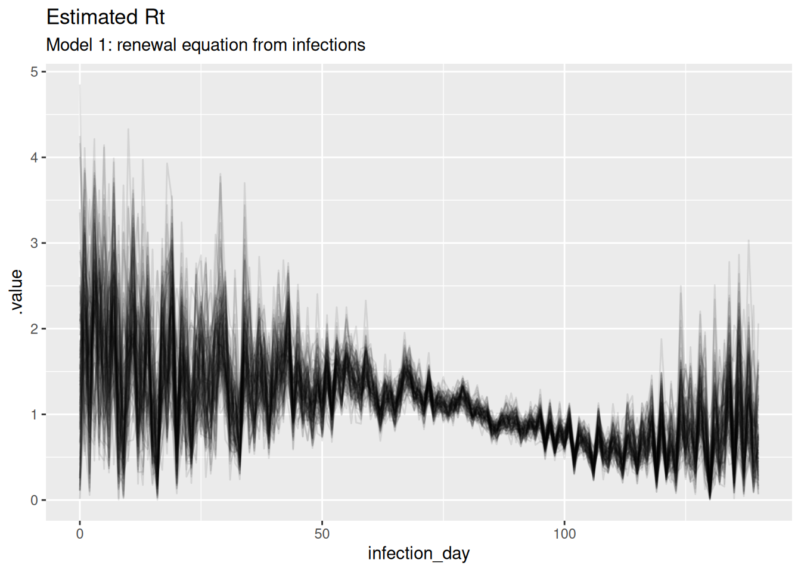
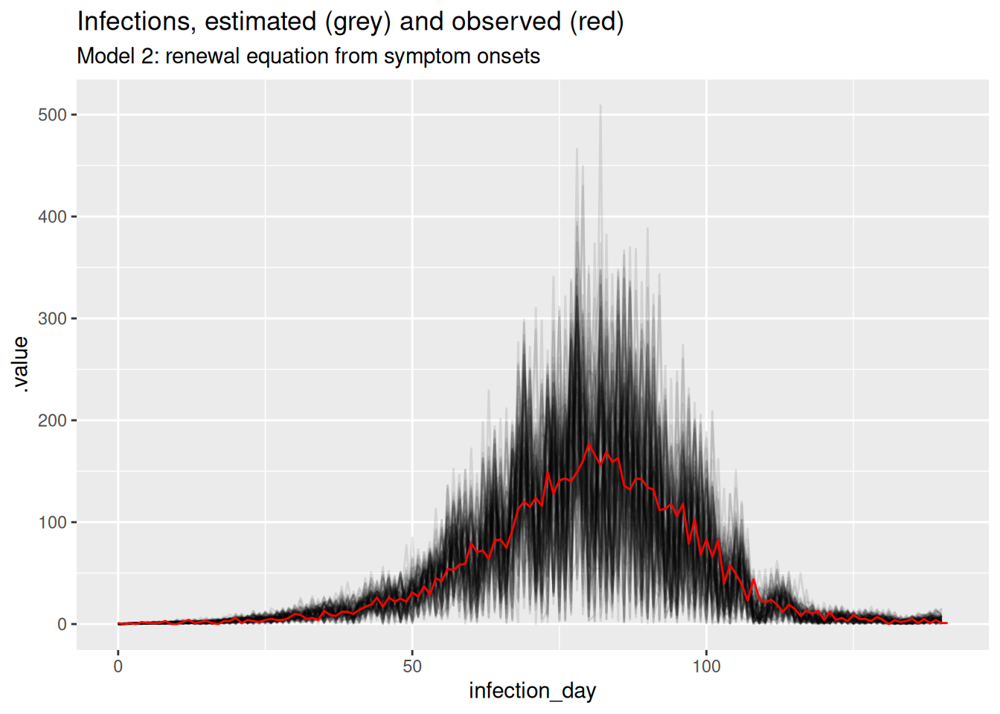
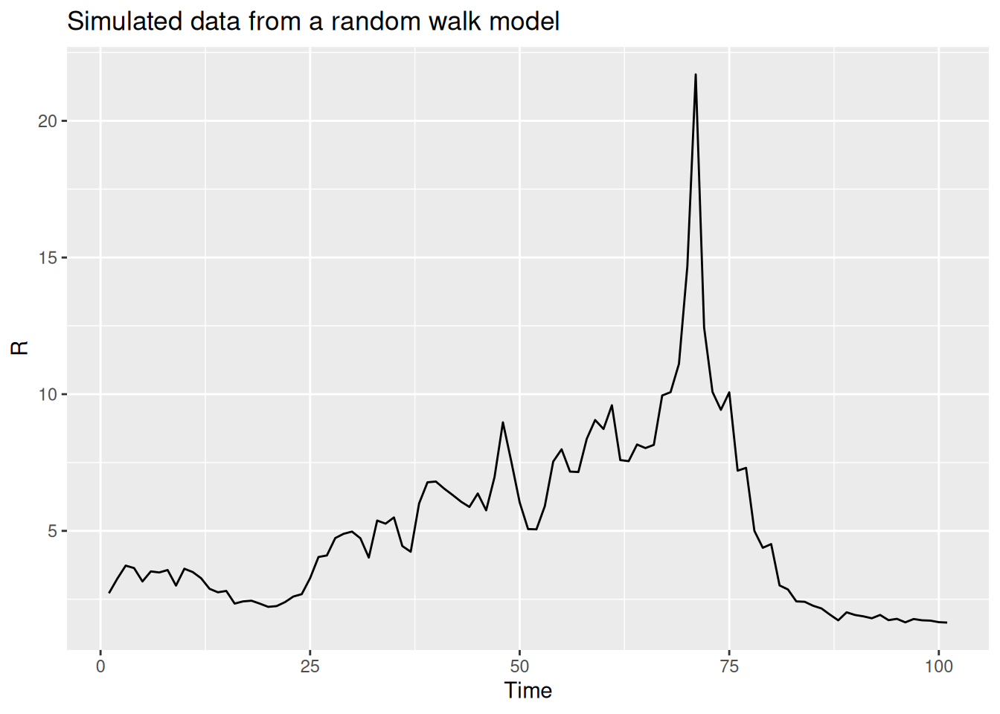
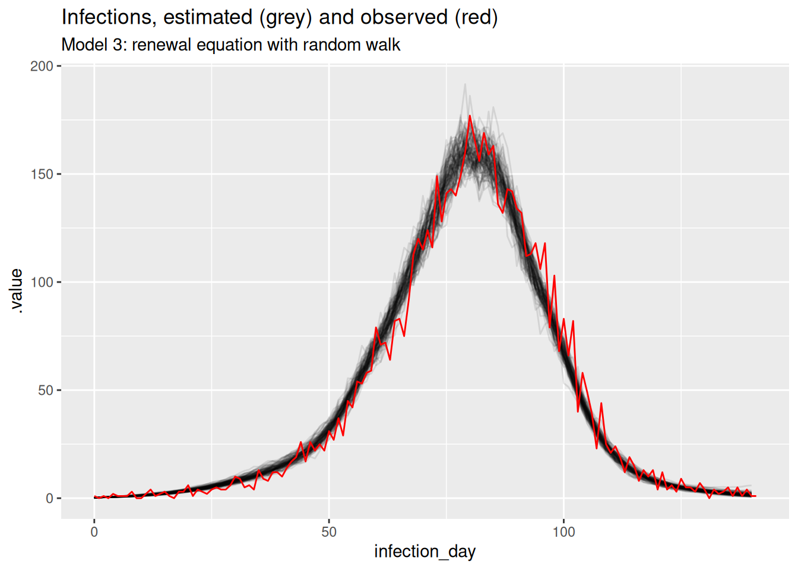
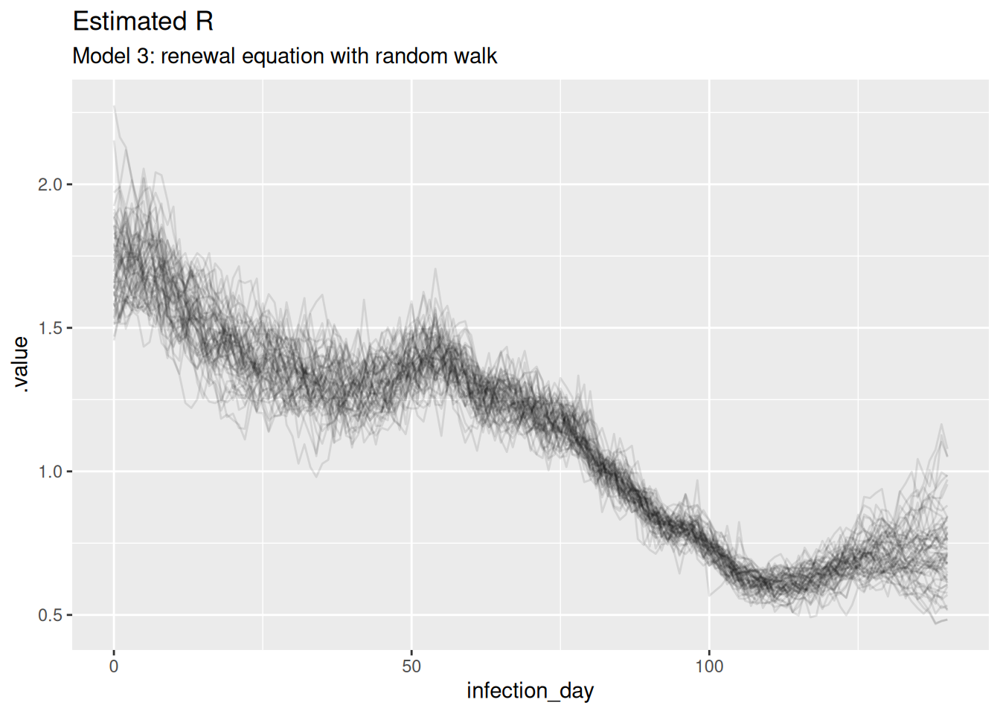

library("nfidd")
library("dplyr")
library("tidyr")
library("ggplot2")
library("tidybayes")
library("purrr")\(R_t\) estimation and the renewal equation
Introduction
In the last session we used the idea of convolutions as a way to interpret individual time delays at a population level. In that session, we linked symptom onsets back to infections. Now we want to link infections themselves together over time, knowing that current infections were infected by past infections. Correctly capturing this transmission process is crucial to modelling infections in the present and future.
Slides
Objectives
The aim of this session is to introduce the renewal equation as an infection generating process, and to show how it can be used to estimate a time-varying reproduction number.
NoteSetup
Source file
The source file of this session is located at sessions/R-estimation-and-the-renewal-equation.qmd.
Libraries used
In this session we will use the nfidd package to load a data set of infection times and access stan models and helper functions, the dplyr and tidyr packages for data wrangling, ggplot2 library for plotting, the tidybayes package for extracting results of the inference, and the purrr package for functional programming.
Tip
The best way to interact with the material is via the Visual Editor of RStudio.
Initialisation
We set a random seed for reproducibility. Setting this ensures that you should get exactly the same results on your computer as we do. We also set an option that makes cmdstanr show line numbers when printing model code. This is not strictly necessary but will help us talk about the models.
set.seed(123)
options(cmdstanr_print_line_numbers = TRUE)The renewal equation as a process model for infectious diseases
In this session we introduce modelling the infection process itself, in addition to modelling observation processes.
Recall that in the session on convolutions we tried to estimate the number of infections. In doing so we assumed that infections every day were independently identically distributed and determined only by the number of symptom onsets that they caused. In reality, however, we know that infections are not independent. Because infection is dependent on a pathogen being transmitted from one individual to another, we expect infections on any day to depend on existing infections, that is the number of individuals that became infectious in the recent past. We now express this relationship via the renewal equation, which links these recent infections to the number of new infections expected on any day via the reproduction number \(R_t\).
Remember that this is a more general concept than the basic reproduction number \(R_0\) which represents the average number of secondary infections caused by a single infectious individual in a completely susceptible population.
The reproduction number \(R_t\) (sometimes called the effective reproduction number) more generally describes the average number of secondary infections caused by a single infectious individual. It can vary in time and space as a function of differences in population level susceptibility, changes in behaviour, policy, seasonality etc.
In most mechanistic models of infectious diseases (starting with the simplest SIR model), \(R_t\) arises out of a combination of parameters and variables representing the system state, for example in a simple SIR model it can be calculated as \(R_0 S/N\) where \(S\) is the current number of susceptibles in the population of size \(N\). By fitting such models to data it is then possible to calculate the value of \(R_t\) at any point in time.
The renewal equation represents a more general model which includes the SIR model as a special case. In its basic form it makes no assumption about the specific processes that cause \(R_t\) to have a certain value and/or change over time, but instead it only relates the number of infected people in the population, the current value of the reproduction number and a delay distribution that represents the timings of when individuals infect others relative to when they themselves became infected, the so-called generation time. Mathematically, it can be written as
\[ I_t = R_t \sum_{i=1}^{g_\mathrm{max}} I_{t-i} g_i \]
Here, \(I_t\) is the number of infected individuals on day \(t\), \(R_t\) is the current value of the reproduction number and \(g_i\) is the probability of a secondary infection occurring \(i\) days after the infector became infected themselves, with a maximum \(g_\mathrm{max}\). Remembering the session on convolutions you will be able to identify that the renewal equation represents a convolution of the infection time series with itself, with the delay distribution given by \(g_i\) and \(R_t\) representing a scaling that is being applied.
TipDiscrete vs. continuous renewal equation
The equation shown above represents the discrete version of the reproduction number. Similar to discussions in the session on convolutions this can be interpreted as a discretised version of a continuous one where the sum is replaced by an integral and the generation time distribution is continuous. Note that in the discrete version we have started the sum at 1 and thus set \(g_0=0\) which will make calculations easier.
TipInstantaneous vs. case reproduction number
There are different definitions of the reproduction number that can be applied to the situation where it changes in time. As it is defined above it is also called the instantaneous reproduction number because any change affects all currently infectious individuals instantaneously. Another example of a definition is the case reproduction number, where changes affect individuals at the time that they are infected but then they have a constant reproduction number throughout their infectious period.
TipStochastic vs. deterministic renewal equation
The version of the discrete renewal equation we wrote above is deterministic, i.e. knowing the number of infections up to a certain time point and the reproduction number we can work out exactly how many new infections we will see. Sometimes stochasticity is added where the equation above gives the expectation of \(I_t\) but there exists random variation around it. In this course we will only deal with the deterministic renewal equation.
Simulating an epidemic using the renewal equation
With the theory out of the way we now turn to simulating an epidemic using the renewal equation. We can use function included in the nfidd package to simulate the epidemic using the discrete renewal equation.
renewalfunction (I0, R, gen_time)
{
max_gen_time <- length(gen_time)
times <- length(R)
I <- c(I0, rep(0, times))
for (t in 1:times) {
first_index <- max(1, t - max_gen_time + 1)
I_segment <- I[seq(first_index, t)]
gen_pmf <- rev(gen_time[seq_len(t - first_index + 1)])
I[t + 1] <- sum(I_segment * gen_pmf) * R[t]
}
I[-1]
}
<bytecode: 0x5653f33732f0>
<environment: namespace:nfidd>
NoteTake 2 minutes
Try to understand the renewal() function above. Compare it to the convolve_with_delay() function from the session on convolutions. How are they similar? Can you explain the key differences between the two? Try calling the function with a few different probability distributions and parameters. What kind of behaviours do you see depending on the values you put in?
Estimating \(R_t\) from a time series of infections
We now return to the time series of infections we used in the session on convolutions.
inf_ts <- make_daily_infections(infection_times)
head(inf_ts)# A tibble: 6 × 2
infection_day infections
<dbl> <int>
1 0 1
2 1 0
3 2 1
4 3 0
5 4 2
6 5 1This creates the inf_ts data set which we can look at e.g. using
head(inf_ts)# A tibble: 6 × 2
infection_day infections
<dbl> <int>
1 0 1
2 1 0
3 2 1
4 3 0
5 4 2
6 5 1We use a renewal equation model in stan to estimate the effective reproduction number throughout the outbreak. We assume that the generation time is gamma-distributed with mean 4 and standard deviation 2, with a maximum of 2 weeks (14 days). From this we can calculate that the parameters of the distribution are shape 4 and rate 1. We can use the censored_delay_pmf() function defined in the session on convolutions to use this continuous distribution with the discrete renewal equation.
To approximate the generation time PMF using random draws from the underlying continuous distribution use
gen_time_pmf <- censored_delay_pmf(rgamma, max = 14, shape = 4, rate = 1)The discrete renewal equation is only valid for generation times greater than 0 so we remove the first element of the pmf and re-normalise:
gen_time_pmf <- gen_time_pmf[-1] ## remove first element
gen_time_pmf <- gen_time_pmf / sum(gen_time_pmf) ## renormaliseAs always we first load the stan model and spend some time trying to understand it.
r_mod <- nfidd_cmdstan_model("estimate-r")
r_mod 1: functions {
2: #include "functions/renewal.stan"
3: }
4:
5: data {
6: int n; // number of days
7: int I0; // number initially infected
8: array[n] int obs; // observed infections
9: int gen_time_max; // maximum generation time
10: array[gen_time_max] real gen_time_pmf; // pmf of generation time distribution
11: }
12:
13: parameters {
14: array[n] real<lower = 0> R;
15: }
16:
17: transformed parameters {
18: array[n] real infections = renewal(I0, R, gen_time_pmf);
19: }
20:
21: model {
22: // priors
23: R ~ normal(1, 1) T[0, ];
24: obs ~ poisson(infections);
25: }
TipTake 2 minutes
Familiarise yourself with the model above. Again there is a functions block at the beginning of the model (lines 1-3), where we load a function called renewal() (line 2) from a file of the same name which can be found in the subdirectory functions of the stan directory or viewed on the github repo. The functions correspond exactly to our earlier R function of the same name. Later, this function is called in the model block, to generate the time series of infections using the discretised renewal model (line 19). Which line defines priors, and which the likelihood?
NoteSolution
Line 24 defines the prior distribution of \(R_t\) at each time point, and Line 25 defines the likelihood using Poisson observation uncertainty.
Once again we can generate estimates from this model:
data <- list(
n = nrow(inf_ts) - 1,
obs = inf_ts$infections[-1],
I0 = inf_ts$infections[1],
gen_time_max = length(gen_time_pmf),
gen_time_pmf = gen_time_pmf
)
r_fit <- nfidd_sample(r_mod, data = data)r_fit variable mean median sd mad q5 q95 rhat ess_bulk ess_tail
lp__ 22088.54 22088.76 8.49 8.33 22073.66 22101.69 1.00 1025 1291
R[1] 1.35 1.30 0.85 0.91 0.11 2.83 1.00 681 388
R[2] 2.06 2.02 0.78 0.80 0.85 3.38 1.00 1406 809
R[3] 1.56 1.51 0.79 0.82 0.30 2.94 1.00 1058 495
R[4] 2.28 2.24 0.77 0.78 1.06 3.59 1.00 2122 828
R[5] 1.86 1.82 0.77 0.76 0.62 3.20 1.00 1594 746
R[6] 1.75 1.70 0.77 0.79 0.60 3.17 1.00 2121 1102
R[7] 1.67 1.59 0.77 0.79 0.50 3.01 1.00 1760 914
R[8] 2.27 2.23 0.71 0.72 1.17 3.52 1.00 2062 971
R[9] 1.15 1.07 0.72 0.75 0.15 2.42 1.00 1458 666
# showing 10 of 283 rows (change via 'max_rows' argument or 'cmdstanr_max_rows' option)Once stan has run its chains, we can visualise the posterior estimates.
# Extract posterior draws
r_posterior <- r_fit |>
gather_draws(R[infection_day]) |>
ungroup() |>
mutate(infection_day = infection_day - 1) |>
filter(.draw %in% sample(.draw, 100))
ggplot(
data = r_posterior,
aes(x = infection_day, y = .value, group = .draw)) +
geom_line(alpha = 0.1) +
labs(title = "Estimated Rt",
subtitle = "Model 1: renewal equation from infections")
inf_posterior <- r_fit |>
gather_draws(infections[infection_day]) |>
ungroup() |>
mutate(infection_day = infection_day - 1) |>
mutate(infections = map_dbl(.value, ~ rpois(1, .x))) |>
filter(.draw %in% sample(.draw, 100))
ggplot(inf_posterior, mapping = aes(x = infection_day)) +
geom_line(mapping = aes(y = .value, group = .draw), alpha = 0.1) +
geom_line(
data = inf_ts, mapping = aes(y = infections), colour = "red"
) +
labs(title = "Infections, estimated (grey) and observed (red)",
subtitle = "Model 1: renewal equation from infections")
TipTake 2 minutes
What do you think of these estimates? In particular, what do you think of the estimates at the beginning and end of the outbreak? Are they consistent with the true Rt trajectory and with each other?
NoteSolution
The estimates are quite noisy, especially in the early days of the outbreak and towards the estimation date. It looks like the precision of the estimates is related to the number of infections observed on each day. The model fits the observed infections very well. Rt crosses 1 at the peak of the outbreak which is consistent with the true Rt trajectory.
Estimating \(R_t\) from a time series of symptom onsets
Epidemiological data is rarely, perhaps never, available as a time series of infection events. Instead, we usually observe outcomes such as symptom onsets when individuals interact with the health system, e.g. by presenting to a hospital. In the session on convolutions we simulated symptom onsets from a time series of infections by convolving with a delay and then sampling from a Poisson distribution: For this we used the convolved_with_delay() function.
We then simulate observations again using:
ip_pmf <- censored_delay_pmf(rgamma, max = 14, shape = 5, rate = 1)
onsets <- convolve_with_delay(inf_ts$infections, ip_pmf)
obs <- rpois(length(onsets), onsets)We now add this to our renewal equation model and use this to estimate infections as well as the reproduction number:
r_inf_mod <- nfidd_cmdstan_model("estimate-inf-and-r")
r_inf_mod 1: functions {
2: #include "functions/convolve_with_delay.stan"
3: #include "functions/renewal.stan"
4: }
5:
6: data {
7: int n; // number of days
8: int I0; // number initially infected
9: array[n] int obs; // observed symptom onsets
10: int gen_time_max; // maximum generation time
11: array[gen_time_max] real gen_time_pmf; // pmf of generation time distribution
12: int<lower = 1> ip_max; // max incubation period
13: array[ip_max + 1] real ip_pmf;
14: }
15:
16: parameters {
17: array[n] real<lower = 0> R;
18: }
19:
20: transformed parameters {
21: array[n] real infections = renewal(I0, R, gen_time_pmf);
22: array[n] real onsets = convolve_with_delay(infections, ip_pmf);
23: }
24:
25: model {
26: // priors
27: R ~ normal(1, 1) T[0, ];
28: obs ~ poisson(onsets);
29: }
TipTake 2 minutes
Familiarise yourself with the model above. Compare it to the model used earlier in this session, and the one used in the session on convolutions. Does this model have more parameters? How do the assumptions about the infections time series differ between the models?
NoteSolution
The model has a similar number of parameters but the assumptions about the infections time series are different. The model used in the session on convolutions assumes that the number of infections each day is independent and identically distributed. In contrast, the model used here assumes that the number of infections each day is dependent on the number of infections on previous days due to the renewal equation. Now it is Rt that is assumed to be independent and identically distributed.
We then generate estimates from this model:
data <- list(
n = length(obs) - 1,
obs = obs[-1],
I0 = inf_ts$infections[1],
gen_time_max = length(gen_time_pmf),
gen_time_pmf = gen_time_pmf,
ip_max = length(ip_pmf) - 1,
ip_pmf = ip_pmf
)
r_inf_fit <- nfidd_sample(
r_inf_mod, data = data, init = \() list(init_R = 1)
)Generally, one should start MCMC samplers with multiple different starting values to make sure the whole posterior distribution is explored. When testing this model, we noticed that sometimes the model failed to fit the data at all. Because of this, we added an argument to start sampling with init_R set to 1. This makes sure the sampler starts fitting the model from a sensible value and avoids fitting failiures.
r_inf_fit variable mean median sd mad q5 q95 rhat ess_bulk ess_tail
lp__ 21498.48 21498.68 9.54 9.51 21482.54 21514.43 1.01 572 1074
R[1] 1.43 1.33 0.83 0.83 0.23 2.93 1.00 1189 444
R[2] 1.68 1.65 0.84 0.86 0.37 3.16 1.00 1018 531
R[3] 1.82 1.75 0.87 0.86 0.51 3.31 1.00 1679 887
R[4] 1.81 1.77 0.85 0.88 0.49 3.32 1.00 1174 530
R[5] 1.77 1.73 0.86 0.87 0.39 3.26 1.00 1180 636
R[6] 1.81 1.76 0.85 0.90 0.45 3.28 1.00 1119 583
R[7] 2.03 1.99 0.83 0.88 0.75 3.42 1.00 1886 1074
R[8] 1.54 1.50 0.80 0.87 0.33 2.93 1.00 1501 822
R[9] 1.57 1.54 0.86 0.93 0.28 3.04 1.00 1449 841
# showing 10 of 424 rows (change via 'max_rows' argument or 'cmdstanr_max_rows' option)We again extract the posterior draws noting that this time infections is a latent quantity that we have to infer from the symptom onsets in the same way that Rt was in the previous model.
r_inf_posteriors <- r_inf_fit |>
gather_draws(infections[infection_day], R[infection_day]) |>
ungroup() |>
mutate(infection_day = infection_day - 1) |>
filter(.draw %in% sample(.draw, 100))We can visualise infections compared to the data used to generate the time series of onsets
inf_posterior <- r_inf_posteriors |>
filter(.variable == "infections")
ggplot(inf_posterior, mapping = aes(x = infection_day)) +
geom_line(mapping = aes(y = .value, group = .draw), alpha = 0.1) +
geom_line(
data = inf_ts, mapping = aes(y = infections), colour = "red"
) +
labs(title = "Infections, estimated (grey) and observed (red)",
subtitle = "Model 2: renewal equation from symptom onsets")
and reproduction numbers
r_inf_posterior <- r_inf_posteriors |>
filter(.variable == "R")
ggplot(
r_inf_posterior, mapping = aes(x = infection_day, y = .value, group = .draw)
) +
geom_line(alpha = 0.1)
TipTake 2 minutes
What do you think of these estimates? In particular, what do you think of the estimates at the beginning and end of the outbreak? Are they consistent with the true Rt trajectory and with each other? Are they consistent with the estimates from the previous model?
NoteSolution
The estimates are very noisy across the whole outbreak. They still appear to roughly follow the true Rt trajectory, but the uncertainty is very high. Rt still crosses 1 at the peak of the outbreak which is consistent with the true Rt trajectory. Towards the end of the outbreak the model is not able to capture the true Rt trajectory as well as the previous model. It instead appears to be reverting to having a mean of 1 which is the prior mean. This is because we have specified the generative process for the reproduction number to be independent and identically distributed, which is not consistent with the true Rt trajectory. Now, there is not enough data (due to the delay distribution) to estimate the reproduction number at each time point (due to truncation).
Improving the generative model for the reproduction number
In the model so far we have assumed that the reproduction number at any time point is independent of the reproduction number at any other time point. This assumption has resulted in the quite noisy estimates of the reproduction number that we have seen in the plots above. As we just saw, it also results in real-time estimates (i.e. towards the date of esitmation) that rely heavily on the prior.
In reality, we might expect the reproduction number to change more smoothly over time (except in situations of drastic change such as a very effective intervention) and to be more similar at adjacent time points. We can model this by assuming that the reproduction number at time \(t\) is a random draw from a normal distribution with mean equal to the reproduction number at time \(t-1\) and some standard deviation \(\sigma\). This can be described as a random walk model for the reproduction number. In fact, rather than using this model directly, a better choice might be to use a model where the logarithm of the reproduction number does a random walk. Tas this will ensure that the reproduction number is always positive and that changes are multiplicative rather than additive. Otherwise, the same absolute change in the reproduction number would have a larger effect when the reproduction number is small, which likely doesn’t match your intuition for how outbreaks evolve over time. We can write this model as
\[ \sigma \sim HalfNormal(0, 0.05) \\ \] \[ R_0 \sim \mathcal{Lognormal}(1, 0.5) \] \[ \log(R_t) \sim \mathcal{N}(\log(R_{t-1}), \sigma) \]
Here we have placed a prior on the standard deviation of the random walk, which we have assumed to be half-normal (i.e., normal but restricted to being non-negative) with a mean of 0 and a standard deviation of 0.05. This is a so-called weakly informative prior that allows for some variation in the reproduction number over time but not an unrealistic amount. We have also placed a prior on the initial reproduction number, which we have assumed to be normally distributed with a mean of 1 and a standard deviation of 0.5. This is a weakly informative prior that allows for a range of initial reproduction numbers but has a mean of 1. The last line is the geometric random walk.
Simulating a geometric random walk
You can have a look at an R function for performing the geometric random walk:
geometric_random_walkfunction (init, noise, std)
{
n <- length(noise) + 1
x <- numeric(n)
x[1] <- log(init)
for (i in 2:n) {
x[i] <- x[i - 1] + noise[i - 1] * std
}
exp(x)
}
<bytecode: 0x5653f8180e10>
<environment: namespace:nfidd>
TipTake 2 minutes
Look at this function and try to understand what it does. Note that we use the fact that we can generate a random normally distributed variable \(X\) with mean 0 and standard deviation \(\sigma\) by mutiplying a standard normally distributed variable (i.e., mean 0 and standard deviation 1) \(Y\) with \(\sigma\). Using this non-centred parameterisation for efficiency) will improve our computational efficency later when using an equivalent function in stan
We can use this function to simulate a random walk (shown in black below) and compare it to a normal(1,1) prior (shown in red below) that we used in the previous model:
R <- geometric_random_walk(init = 1, noise = rnorm(100), std = 0.1)
data <- tibble(t = seq_along(R), R = exp(R))
# Generate normal(1,1) prior samples for comparison
normal_prior <- rnorm(100, mean = 1, sd = 1)
normal_data <- tibble(t = seq_along(normal_prior), R = normal_prior)
ggplot(data, aes(x = t, y = R)) +
geom_line() +
geom_line(data = normal_data, aes(x = t, y = R), colour = "red") +
labs(title = "Simulated data from a random walk model",
subtitle = "Random walk (black) vs Normal(1,1) prior (red)",
x = "Time",
y = "R")
TipTake 2 minutes
Repeat this multiple times, either with the same parameters or changing some to get a feeling for what this does compared to the normal(1,1) prior.
Estimating \(R_t\) with a geometric random walk prior
We can now include this in a stan model,
rw_mod <- nfidd_cmdstan_model("estimate-inf-and-r-rw")
rw_mod 1: functions {
2: #include "functions/convolve_with_delay.stan"
3: #include "functions/renewal.stan"
4: #include "functions/geometric_random_walk.stan"
5: }
6:
7: data {
8: int n; // number of days
9: int I0; // number initially infected
10: array[n] int obs; // observed symptom onsets
11: int gen_time_max; // maximum generation time
12: array[gen_time_max] real gen_time_pmf; // pmf of generation time distribution
13: int<lower = 1> ip_max; // max incubation period
14: array[ip_max + 1] real ip_pmf;
15: }
16:
17: parameters {
18: real<lower = 0> init_R; // initial reproduction number
19: array[n-1] real rw_noise; // random walk noise
20: real<lower = 0> rw_sd; // random walk standard deviation
21: }
22:
23: transformed parameters {
24: array[n] real R = geometric_random_walk(init_R, rw_noise, rw_sd);
25: array[n] real infections = renewal(I0, R, gen_time_pmf);
26: array[n] real onsets = convolve_with_delay(infections, ip_pmf);
27: }
28:
29: model {
30: // priors
31: init_R ~ normal(1, 0.5) T[0, ];
32: rw_noise ~ std_normal();
33: rw_sd ~ normal(0, 0.05) T[0, ];
34: obs ~ poisson(onsets);
35: }Note that the model is very similar to the one we used earlier, but with the addition of the random walk model for the reproduction number using a function in stan that does the same as our R function of the same name we defined.
We can now generate estimates from this model:
data <- list(
n = length(obs) - 1,
obs = obs[-1],
I0 = inf_ts$infections[1],
gen_time_max = length(gen_time_pmf),
gen_time_pmf = gen_time_pmf,
ip_max = length(ip_pmf) - 1,
ip_pmf = ip_pmf
)
r_rw_inf_fit <- nfidd_sample(
rw_mod, data = data, max_treedepth = 12,
init = \() list(init_R = 1, rw_sd = 0.01)
)r_rw_inf_fit variable mean median sd mad q5 q95 rhat ess_bulk
lp__ 21467.47 21467.52 8.65 8.51 21452.73 21481.08 1.01 802
init_R 1.62 1.62 0.20 0.19 1.31 1.97 1.00 1372
rw_noise[1] 0.14 0.14 0.99 1.03 -1.46 1.73 1.00 2310
rw_noise[2] 0.11 0.08 0.96 0.95 -1.46 1.68 1.00 2283
rw_noise[3] 0.07 0.11 0.96 0.95 -1.56 1.66 1.00 2107
rw_noise[4] 0.01 0.01 1.00 1.01 -1.58 1.67 1.00 2649
rw_noise[5] -0.02 -0.04 0.99 1.00 -1.64 1.58 1.00 2174
rw_noise[6] -0.11 -0.11 1.01 1.00 -1.74 1.53 1.01 2567
rw_noise[7] -0.18 -0.16 1.01 1.08 -1.82 1.48 1.00 2337
rw_noise[8] -0.16 -0.17 1.00 1.01 -1.79 1.53 1.00 2304
ess_tail
1155
1370
1508
1404
1760
1678
1618
1184
1583
1214
# showing 10 of 566 rows (change via 'max_rows' argument or 'cmdstanr_max_rows' option)As this is a more complex model we have increased the max_treedepth parameter to 12 to allow for more complex posterior distributions and we have also provided an initialisation for the init_R and rw_sd parameters to help the sampler find the right region of parameter space. This is a common technique when fitting more complex models and is needed as it is hard a priori to know where the sampler should start.
We can again extract and visualise the posteriors in the same way as earlier.
rw_posteriors <- r_rw_inf_fit |>
gather_draws(infections[infection_day], R[infection_day]) |>
ungroup() |>
mutate(infection_day = infection_day - 1) |>
filter(.draw %in% sample(.draw, 100))rw_inf_posterior <- rw_posteriors |>
filter(.variable == "infections")
ggplot(mapping = aes(x = infection_day)) +
geom_line(
data = rw_inf_posterior, mapping = aes(y = .value, group = .draw), alpha = 0.1
) +
geom_line(data = inf_ts, mapping = aes(y = infections), colour = "red") +
labs(title = "Infections, estimated (grey) and observed (red)",
subtitle = "Model 3: renewal equation with random walk")
and reproduction numbers
rw_r_inf_posterior <- rw_posteriors |>
filter(.variable == "R") |>
filter(.draw %in% sample(.draw, 100))
ggplot(
data = rw_r_inf_posterior,
mapping = aes(x = infection_day, y = .value, group = .draw)
) +
geom_line(alpha = 0.1) +
labs(title = "Estimated R",
subtitle = "Model 3: renewal equation with random walk")
TipTake 2 minutes
What do you think of these estimates? In particular, what do you think of the estimates at the beginning and end of the outbreak? Are they consistent with the true Rt trajectory and with each other? Are they consistent with the estimates from the previous model?
NoteSolution
The estimates are smoothest so far, and the model is able to capture the true Rt trajectory more accurately than the previous model. Unlike the previous model, the model is able to capture the true Rt trajectory at the end of the outbreak with variance increasing towards the date of estimation. The infection estimates are the least uncertain from any model and potentially overly certain as they don’t fully cover the observed infections.
Comparing the models
We can now plot all the Rt trajectories from the models together to compare them.
## earlier posteriors
r_posterior <- r_posterior |>
mutate(data = "infections")
r_inf_posterior <- r_inf_posterior |>
mutate(data = "onsets (normal)")
rw_r_inf_posterior <- rw_r_inf_posterior |>
mutate(data = "onsets (random walk)")
all_posteriors <- rbind(
r_inf_posterior,
rw_r_inf_posterior,
r_posterior
)
ggplot(
all_posteriors,
mapping = aes(x = infection_day, y = .value, group = .draw,
colour = data)
) +
geom_line(alpha = 0.1) +
scale_fill_brewer(palette = "Set1") +
labs(
title = "Rt estimates from renewal equation models",
subtitle = paste(
"Estimates from infections, from symptom onsets, and from onsets with a",
"random walk"
)
) +
guides(colour = guide_legend(override.aes = list(alpha = 1))) +
theme(legend.position = "bottom")
TipTake 2 minutes
Revisit your answers to the previous questions in this session. What are the key differences between the Rt estimates from the models? Which model do you think is the best fit for the data? Which model is the most realistic?
NoteSolution
We can see that the estimates are smoother when using the random walk model for the reproduction number, compared to the normal model. The model that fits directly to infections has the lowest uncertainty, which we would expect as it doesn’t have to infer the number of infections from symptom onsets but even here the reproduction number estimates are unrealistically noisy due to the assumption of independence between infections each day when infection counts are low. The random walk model is the most realistic model, as it is able to capture the true Rt trajectory more accurately than the normal model. The model that fits directly to infections is the best fit for the data, but depends on the availability of infections data which in practice is never available.
TipTake 2 minutes
Compare the results across the models used in this session, and the one used in the session on convolutions. How do the models vary in the number of parameters that need to be estimated? How do the assumptions about the infections time series differ between the models? What do you notice about the level of uncertainty in the estimates of infections and \(R_t\) over the course of the time series?
NoteSolution
We can see that using the renewal model as generative model we recover the time series of infections more accurately compared to previously when we assumed independent numbers of infections each day and that using a more believable model (i.e the geometric random walk) for the reproduction number improves things even more. Of course, this is helped by the fact that the data was generated by a model similar to the renewal model used for inference.
Going further
Challenge
- We have used symptom onsets under the assumption that every infected person develops symptoms. Earlier we also created a time series of hospitalisation under the assumption that only a proportion (e.g., 30%) of symptomatic individuals get hospitalised. How would you change the model in this case? What are the implications for inference?
- If you have time you could try re-running the experiment with different \(R_t\) trajectories (using the
renewal()function to simulate data) and delay distributions to see whether results change.
Methods in practice
EpiEstimprovides a range of accessible tools for estimating \(R_t\), using a simpler approach than the model we have used here.EpiNow2(Abbott et al. 2025) package again implements a range of models similar to the model we have used here.EpidemiaBhatt et al. (2020) implements a regression model approach to \(R_t\) estimation.- In this course we focused on the instantaneous reproduction number. An alternative is the case reproduction number implemented in Wallinga and Teunis (2004).
- We face many choices when estimating the reproduction number. Brockhaus et al. (2023) explores the impact of these choices on resulting estimates.
- Gostic et al. (2020) has further guidance on best practice.
Wrap up
- Review what you’ve learned in this session with the learning objectives
- Share your questions and thoughts
References
Abbott, Sam, Joel Hellewell, Katharine Sherratt, Katelyn Gostic, Joe Hickson, Hamada S. Badr, Michael DeWitt, James M. Azam, EpiForecasts, and Sebastian Funk. 2025. “EpiNow2: Estimate Real-Time Case Counts and Time-Varying Epidemiological Parameters.”
Bhatt, Samir, Neil Ferguson, Seth Flaxman, Axel Gandy, Swapnil Mishra, and James A. Scott. 2020. “Semi-Mechanistic Bayesian Modeling of COVID-19 with Renewal Processes.” arXiv. https://doi.org/10.48550/arXiv.2012.00394.
Brockhaus, Elisabeth K., Daniel Wolffram, Tanja Stadler, Michael Osthege, Tanmay Mitra, Jonas M. Littek, Ekaterina Krymova, et al. 2023. “Why Are Different Estimates of the Effective Reproductive Number so Different? A Case Study on COVID-19 in Germany.” PLOS Computational Biology 19 (11): e1011653. https://doi.org/10.1371/journal.pcbi.1011653.
Gostic, Katelyn M., Lauren McGough, Edward B. Baskerville, Sam Abbott, Keya Joshi, Christine Tedijanto, Rebecca Kahn, et al. 2020. “Practical Considerations for Measuring the Effective Reproductive Number, Rt.” PLOS Computational Biology 16 (12): e1008409. https://doi.org/10.1371/journal.pcbi.1008409.
Wallinga, Jacco, and Peter Teunis. 2004. “Different Epidemic Curves for Severe Acute Respiratory Syndrome Reveal Similar Impacts of Control Measures.” American Journal of Epidemiology 160 (6): 509–16. https://doi.org/10.1093/aje/kwh255.